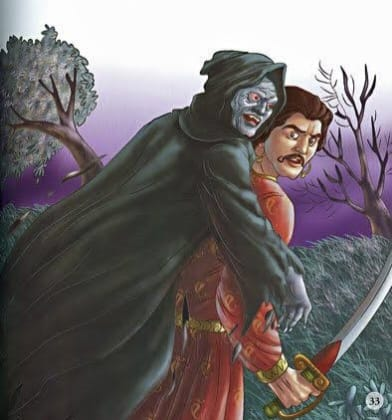

16.શશીપ્રભા કોની પત્ની છે ?
|
દર વખતની જેમ, રાજા વિક્રમાદિત્ય ફરીથી બેતાલને ઝાડ પરથી ઉતારે છે અને તેને યોગી પાસે લઈ જવા માટે આગળ વધે છે.
આ વખતે પણ બેતાલ રાજાને એક નવી વાર્તા કહે છે. બેતાલ કહે છે...
 વર્ષો પહેલા રાજા યશકેતુ નેપાળમાં શિવપુર નામના શહેર પર રાજ કરતા હતા. તે ખૂબ જ હિંમતવાન અને બળવાન હતો.
લગ્નના વર્ષો પછી, તેમને તેમની પત્ની ચંદ્રપ્રભા સાથે એક પુત્રી શશીપ્રભા હતી. સમયની સાથે દીકરી મોટી થઈ, જેની સુંદરતાની બધે ચર્ચા થઈ.
એક દિવસ રાજા તેની પત્ની અને પુત્રી સાથે વસંત ઉત્સવ જોવા ગયો. શ્રીમંત બ્રાહ્મણના પુત્ર માનસ્વામી પણ આ જ તહેવારમાં આવ્યા હતા.
બસંત ઉત્સવમાં રાજાની પુત્રી શશીપ્રભાને જોતાની સાથે જ તે પ્રથમ નજરમાં જ તેના પ્રેમમાં પડી ગયો.
વર્ષો પહેલા રાજા યશકેતુ નેપાળમાં શિવપુર નામના શહેર પર રાજ કરતા હતા. તે ખૂબ જ હિંમતવાન અને બળવાન હતો.
લગ્નના વર્ષો પછી, તેમને તેમની પત્ની ચંદ્રપ્રભા સાથે એક પુત્રી શશીપ્રભા હતી. સમયની સાથે દીકરી મોટી થઈ, જેની સુંદરતાની બધે ચર્ચા થઈ.
એક દિવસ રાજા તેની પત્ની અને પુત્રી સાથે વસંત ઉત્સવ જોવા ગયો. શ્રીમંત બ્રાહ્મણના પુત્ર માનસ્વામી પણ આ જ તહેવારમાં આવ્યા હતા.
બસંત ઉત્સવમાં રાજાની પુત્રી શશીપ્રભાને જોતાની સાથે જ તે પ્રથમ નજરમાં જ તેના પ્રેમમાં પડી ગયો.
આ દરમિયાન એક હાથી ઝડપથી રાજકુમારી તરફ દોડવા લાગ્યો. શશીપ્રભાની રક્ષા માટે તૈનાત તમામ સૈનિકો નશામાં ધૂત હાથીના ડરથી ભાગી ગયા.
બ્રાહ્મણ પુત્ર માનસ્વામીએ હાથીને રાજકુમારી તરફ જતો જોયો કે તરત જ તેણે પોતાનો જીવ જોખમમાં મૂકીને તેને બચાવી લીધી.
બધું જોઈને રાજકુમારી બ્રાહ્મણ યુવક તરફ આકર્ષાઈ. બધાએ બ્રાહ્મણ યુવાનોના વખાણ કર્યા અને બસંત ઉત્સવ પછી બંને પોતપોતાના ઘરે પાછા ફર્યા.
મહેલમાં શશીપ્રભાની હાલત ખરાબ હતી. તે પોતાનો જીવ બચાવનાર બ્રાહ્મણની યાદમાં ખોવાઈ જવા લાગી.
બીજી તરફ, બ્રાહ્મણ યુવક પણ શશીપ્રભાને ફરીથી મળવા માટે ઉત્સુક હતો. રાજકુમારીને કેવી રીતે મળવું તે વિચારતા તે એક કુશળ માણસ પાસે પહોંચ્યા.
મનસ્વામીએ તેને પોતાના મનની સમગ્ર સ્થિતિ જણાવી. સિદ્ધ માણસે સિદ્ધિની શક્તિથી બે ગોળી બનાવી.
તેણે બ્રાહ્મણ યુવકને તેના મોંમાં નાખવા માટે એક ગોળી આપી. યુવકે ગોળી મોઢામાં મુકતા જ તે સુંદર યુવતી બની ગયો.
કુશળ માણસે બીજી ગોળી પોતાના માટે રાખી અને વૃદ્ધ બ્રાહ્મણના વેશમાં આવ્યો.
 પછી તે સિદ્ધપુરુષ માનસ્વામી સાથે સીધો જ મહેલમાં પહોંચ્યો. તેણે રાજાને કહ્યું, “જુઓ, આ મારા પુત્રની ભાવિ પત્ની છે.
તેને થોડા દિવસ મહેલમાં રાખો, કારણ કે મારે તીર્થયાત્રાએ જવાનું છે. મને લાગે છે કે તે શાહી મહેલથી વધુ સુરક્ષિત બીજે ક્યાંય નહીં હોય.
રાજાએ વિચાર્યું કે જો તે ના પાડે તો આ સંપૂર્ણ માણસ કદાચ શાપ પણ આપે. રાજાએ કહ્યું, “હે બ્રાહ્મણ! તમે જાઓ,
તમારા પુત્રની ભાવિ પત્ની અમારી પાસે સલામત રહેશે. તે મારી પુત્રી સાથે તેના મિત્ર તરીકે રહેશે.
પછી તે સિદ્ધપુરુષ માનસ્વામી સાથે સીધો જ મહેલમાં પહોંચ્યો. તેણે રાજાને કહ્યું, “જુઓ, આ મારા પુત્રની ભાવિ પત્ની છે.
તેને થોડા દિવસ મહેલમાં રાખો, કારણ કે મારે તીર્થયાત્રાએ જવાનું છે. મને લાગે છે કે તે શાહી મહેલથી વધુ સુરક્ષિત બીજે ક્યાંય નહીં હોય.
રાજાએ વિચાર્યું કે જો તે ના પાડે તો આ સંપૂર્ણ માણસ કદાચ શાપ પણ આપે. રાજાએ કહ્યું, “હે બ્રાહ્મણ! તમે જાઓ,
તમારા પુત્રની ભાવિ પત્ની અમારી પાસે સલામત રહેશે. તે મારી પુત્રી સાથે તેના મિત્ર તરીકે રહેશે.
આ સાંભળીને, સિદ્ધ પુરુષ ત્યાંથી ચાલ્યો ગયો અને મનસ્વામી એક છોકરીના વેશમાં શશીપ્રભા સાથે રહેવા લાગ્યા.
તેના મિત્ર જેવો હોવાથી તે રાજકુમારી સાથે ઘણી વાતો કરતો હતો. એક દિવસ મનસ્વામીએ તેને પૂછ્યું, "તું આટલી બધી ઉદાસ કેમ રહે છે?"
તમારી આંખો આખો સમય શું જુએ છે? આ સાંભળીને રાજકુમારીએ બસંત ઉત્સવના દિવસે બનેલી ઘટના સંભળાવી અને કહ્યું,
“તે બ્રાહ્મણ યુવકે મારા હૃદયને આજીજી કરી છે. હું ન તો તેનું નામ જાણું છું કે ન તો તેનું શહેર. હું હંમેશા વિચારું છું કે હું તેને કેવી રીતે મળીશ.”
સ્ત્રી વેશમાં હાજર માનવસ્વામી શશીપ્રભાના બધા વિચારો જાણીને ખૂબ ખુશ થયા. તેણે રાજકુમારીને કહ્યું, "મારા મિત્ર,
હું તમને તે બ્રાહ્મણ યુવક સાથે પરિચય કરાવી શકું છું." આ સાંભળીને શીશપ્રભાએ પ્રેમથી અસ્વસ્થ થઈને કહ્યું, “કહો કેવી રીતે? તું તેને ઓળખે છે?"
ત્યારે મનસ્વામીએ કહ્યું, "તમે ઝડપથી તમારી આંખો બંધ કરો." તેણે આંખો બંધ કરતાં જ બ્રાહ્મણ યુવકે ઝડપથી તેના મોંમાંથી ગોળી કાઢી અને છોકરાના વેશમાં પાછો આવ્યો.
મનસ્વામીએ ખૂબ પ્રેમથી શશીપ્રભાને બોલાવી. તે યુવકનો અવાજ સાંભળીને ખૂબ જ ખુશ થઈ અને ખુશીથી તેને ભેટી પડી."
રાજકુમારીએ તેને પૂછ્યું, “અરે! મારો મિત્ર ક્યાં હતો?" આ સાંભળીને મનસ્વામીએ આખી વાત કહી અને ગોળી મોંમાં નાખી
અને ફરી સ્ત્રી બની ગયાઆ બધું જોઈને રાજકુમારી સ્તબ્ધ થઈ ગઈ અને તેના મનમાં પણ ખૂબ આનંદ થયો.
તે જ સમયે, બંનેએ એકબીજાને પતિ-પત્ની તરીકે સ્વીકારી લીધા અને રાજભવનમાં સાથે રહેવા લાગ્યા.
એક દિવસ રાજાના મંત્રી પુત્રની નજર મનસ્વામી પર પડી. બ્રાહ્મણ યુવકનું નારી સ્વરૂપ જોઈને તે તેના માટે પાગલ થઈ ગયો.
થોડા દિવસો પછી, તેણીએ તેમની લાગણીઓ તેમને વ્યક્ત કરી, પરંતુ માનસ્વામીએ ના પાડી. તેણે કહ્યું, "તે કોઈ બીજાનું છે.
"આ સાંભળીને મંત્રીનો પુત્ર અસ્વસ્થ થઈ ગયો. તેણે આખી વાત તેના પિતાને કહી. પોતાના પુત્રને દુઃખી જોઈને મંત્રીએ રાજાને આખી વાત કહી.
મંત્રીની વાત સાંભળીને રાજાએ મંત્રીના પુત્ર અને સ્ત્રીનું રૂપ ધારણ કરનાર માનસ્વામી સાથે લગ્ન કરવાનું નક્કી કર્યું.
રાજાનો આ આદેશ સાંભળીને મનસ્વામીએ કહ્યું, “મહારાજ! તમે જાણો છો, હું બીજા કોઈ સાથે લગ્ન કરવા જઈ રહ્યો છું. આવું કરવું અન્યાયી હશે.
તેમ છતાં જો તમે મારા લગ્ન કરવા ઈચ્છો છો, તો હું રાજાની આજ્ઞા મુજબ લગ્ન કરીશ.
" રાજા ખૂબ ખુશ થયો અને બંનેના લગ્ન કરાવી દીધાલગ્ન થતાં જ મનસ્વામીએ મંત્રીના પુત્રને કહ્યું,
“તારી જીદને લીધે જ મેં તારી સાથે લગ્ન કર્યા છે, નહીંતર હું આ રાજ્યમાં બીજા કોઈની સાથે લગ્ન કરવા આવ્યો હતો.
હવે તમારે આ પાપ ધોવા માટે તીર્થયાત્રા કરવી પડશે.” મંત્રીનો પુત્ર, પ્રેમમાં પાગલ, તે જ કરે છે.

એક દિવસ સિદ્ધ પુરુષ ફરીથી બ્રાહ્મણના વેશમાં મહેલમાં પહોંચે છે. તેને યુવાન બનાવીને તેનો પુત્ર બનાવ્યા બાદ આ વખતે તે તેની સાથે તેના એક મિત્રને લાવે છે.
બ્રાહ્મણ રાજાને પૂછે છે, "મારી વહુ ક્યાં છે, હું તેને મારી સાથે લઈ જવા માંગુ છું અને મારા પુત્રના લગ્ન તેની સાથે કરાવવા માંગુ છું.
" આ સાંભળીને રાજાએ તેને આખી વાત કહી. સિદ્ધ પુરૂષ ખૂબ ગુસ્સે થયા.
પોતાના શાપથી બચવા રાજાએ કહ્યું, “જુઓ, હવે જે બન્યું છે તે બદલી શકાતું નથી.
હા, હું ચોક્કસપણે તમારા પુત્રના લગ્ન મારી પુત્રી સાથે કરાવી શકું છું. આ સાંભળીને,
સિદ્ધ પુરૂષ રાજાની વાત સાથે સંમત થયા અને રાજાએ તેની પુત્રી શશીપ્રભાના લગ્ન સિદ્ધ પુરુષના મિત્ર સાથે કરાવ્યા,
જે તેના પુત્ર તરીકે મહેલમાં આવ્યો હતો અને સાક્ષી તરીકે અગ્નિ સાથે. આ
દરમિયાન, મનસ્વામી તેના વાસ્તવિક વેશમાં એટલે કે પુરુષ સ્વરૂપમાં ત્યાં પહોંચે છે અને શશીપ્રભાને તેની પત્ની તરીકે જાહેર કરે છે.
આ સાંભળીને બેતાલે વાર્તા કહેવાનું બંધ કરી દીધું. તેણે કહ્યું, "રાજા, હવે તમે જ કહો, શશીપ્રભા કોની પત્ની છે?"
વિક્રમાદિત્યએ જવાબ ન આપ્યો. ગુસ્સામાં બેતાલે કહ્યું, "તું જવાબ આપીશ કે હું તારો શિરચ્છેદ કરીશ?" થોડીવાર વિચાર્યા પછી, વિક્રમાદિત્ય કહે છે,
“શશીપ્રભા એ છોકરાની પત્ની છે, જેને તેણે અગ્નિ સાથે તેના સાક્ષી તરીકે પરણાવી હતી. મનસ્વામી ઘરના વેશમાં રહેતા હતા અને શશીપ્રભાને ગુપ્ત રીતે મળ્યા હતા.
આ જવાબ સાંભળીને બેતાલે કહ્યું, "તમે સાચો જવાબ આપ્યો છે, હવે તમે સાચો જવાબ આપ્યો છે, હું ફરીથી રાજન ઉડીશ.
" આટલું કહીને બેતાલ ફરી એક વાર ઝાડ પાસે જાય છે અને ઊંધી લટકી જાય છે.
સારાંશ :
છેતરપિંડીથી કરેલા પ્રયત્નો નિષ્ફળતા તરફ દોરી જાય છે